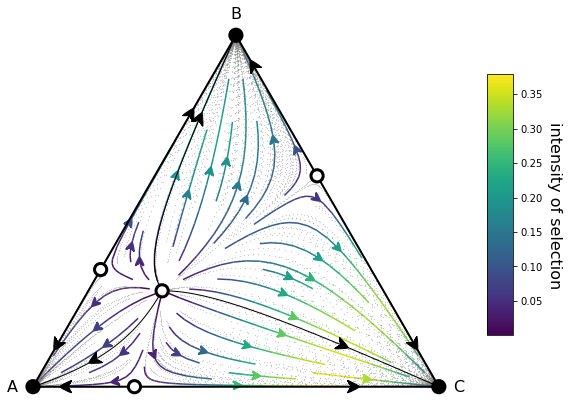
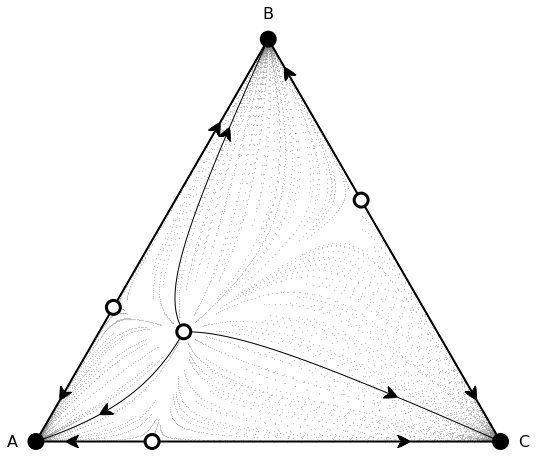

egttools.plotting.simplex2d.Simplex2D¶
- class Simplex2D(nb_points=1000, discrete=False, size=None)[source]¶
Bases:
objectPlots a 2-dimensional simplex in a cartesian plane.
This class offers utility methods to plot gradients and equilibrium points on a 2-simplex (triangle).
The plotting is always done on the unit simplex for convenience. At the moment no rotations are implemented, but we plan to add this feature, so that the triangle can be rotated before the plot.
We discern between continuous and discrete dynamics. The main reason is that this class’ objective is to plot evolutionary dynamics on a simplex. When we are working with the replicator equation it is straightforward to calculate all the gradients on the unit simplex. However, when working with finite populations using the social learning model (social imitation), we are actually working with a simplex with size equivalent to the population size (so all the dimensions of the simplex must sum to Z) and we only consider discrete (integer) values inside the simplex (the population may only have integer individuals). Of course this can be translated into frequencies, which gets us back to the unit simplex, but it is not so simple to transform any value between 0-1 sampled with numpy.linspace to a discrete value.
Therefore, for the discrete case, will will sample directly discrete points in barycentric coordinates and only then, translate them into cartesian cooordinates.
- Parameters:
See also
egttools.plotting.plot_gradient,egttools.plotting.draw_invasion_diagram,egttools.analytical.replicator_equation,egttools.analytical.StochDynamics,Cite,-----,ThisExamples
>>> import numpy as np >>> import matplotlib.pyplot as plt >>> from egttools.plotting.helpers import (xy_to_barycentric_coordinates, calculate_stationary_points, ... calculate_stability) >>> from egttools.helpers.vectorized import (vectorized_replicator_equation, ... vectorized_barycentric_to_xy_coordinates) >>> from egttools.analytical import replicator_equation >>> simplex = Simplex2D() >>> payoffs = np.array([[1, 0, 0], ... [0, 2, 0], ... [0, 0, 3]]) >>> v = np.asarray(xy_to_barycentric_coordinates(simplex.X, simplex.Y, simplex.corners)) >>> results = vectorized_replicator_equation(v, payoffs) >>> xy_results = vectorized_barycentric_to_xy_coordinates(results, simplex.corners) >>> Ux = xy_results[:, :, 0].astype(np.float64) >>> Uy = xy_results[:, :, 1].astype(np.float64) >>> calculate_gradients = lambda u: replicator_equation(u, payoffs) >>> roots, roots_xy = calculate_stationary_points(simplex.trimesh.x, simplex.trimesh.y, ... simplex.corners, calculate_gradients) >>> stability = calculate_stability(roots, calculate_gradients) >>> type_labels = ['A', 'B', 'C'] >>> fig, ax = plt.subplots(figsize=(10,8)) >>> plot = (simplex.add_axis(ax=ax) ... .apply_simplex_boundaries_to_gradients(Ux, Uy) ... .draw_triangle() ... .draw_gradients(zorder=0) ... .add_colorbar() ... .draw_stationary_points(roots_xy, stability) ... .add_vertex_labels(type_labels) ... .draw_trajectory_from_roots(lambda u, t: replicator_equation(u, payoffs), ... roots, ... stability, ... trajectory_length=15, ... linewidth=1, ... step=0.01, ... color='k', draw_arrow=True, arrowdirection='right', ... arrowsize=30, zorder=4, arrowstyle='fancy') ... .draw_scatter_shadow(lambda u, t: replicator_equation(u, payoffs), 300, color='gray', ... marker='.', s=0.1, zorder=0)
>>> plot = (simplex.add_axis(ax=ax) ... .apply_simplex_boundaries_to_gradients(Ux, Uy) ... .draw_triangle() ... .draw_stationary_points(roots_xy, stability) ... .add_vertex_labels(type_labels) ... .draw_trajectory_from_roots(lambda u, t: replicator_equation(u, payoffs), ... roots, ... stability, ... trajectory_length=15, ... linewidth=1, ... step=0.01, ... color='k', draw_arrow=True, arrowdirection='right', ... arrowsize=30, zorder=4, arrowstyle='fancy') ... .draw_scatter_shadow(lambda u, t: replicator_equation(u, payoffs), 300, color='gray', ... marker='.', s=0.1, zorder=0)
Methods
Creates or stores a new axis inside the class.
Adds a color bar to indicate the meaning of the colors of the plotted gradients.
Adds information to the class about which edges have random drift.
Adds labels to the vertices of the triangle that represents the 2-simplex.
Applies boundaries of the triangle to a list of gradient values over the cartesian grid.
Draws the gradients inside the unit simplex using a streamplot.
Draws a series of point which follows trajectories in the simplex starting from random points.
Draws the stationary distribution inside the simplex using a matplotlib.pyplot.tripcolor
Draws the black circles for stable points and white circles for unstable ones.
Draws trajectories inside the unit simplex starting from random initial points.
Draws trajectories inside the unit simplex starting from the indicated points.
Draws trajectories inside the unit simplex starting from the stationary points.
Draws the borders of a triangle enclosing the 2-simplex.
Returns the stored figure and axis.
Attributes
- __init__(nb_points=1000, discrete=False, size=None)[source]¶
Plots a 2-dimensional simplex in a cartesian plane.
This class offers utility methods to plot gradients and equilibrium points on a 2-simplex (triangle).
The plotting is always done on the unit simplex for convenience. At the moment no rotations are implemented, but we plan to add this feature, so that the triangle can be rotated before the plot.
We discern between continuous and discrete dynamics. The main reason is that this class’ objective is to plot evolutionary dynamics on a simplex. When we are working with the replicator equation it is straightforward to calculate all the gradients on the unit simplex. However, when working with finite populations using the social learning model (social imitation), we are actually working with a simplex with size equivalent to the population size (so all the dimensions of the simplex must sum to Z) and we only consider discrete (integer) values inside the simplex (the population may only have integer individuals). Of course this can be translated into frequencies, which gets us back to the unit simplex, but it is not so simple to transform any value between 0-1 sampled with numpy.linspace to a discrete value.
Therefore, for the discrete case, will will sample directly discrete points in barycentric coordinates and only then, translate them into cartesian cooordinates.
- Parameters:
See also
egttools.plotting.plot_gradient,egttools.plotting.draw_invasion_diagram,egttools.analytical.replicator_equation,egttools.analytical.StochDynamics,Cite,-----,ThisExamples
>>> import numpy as np >>> import matplotlib.pyplot as plt >>> from egttools.plotting.helpers import (xy_to_barycentric_coordinates, calculate_stationary_points, ... calculate_stability) >>> from egttools.helpers.vectorized import (vectorized_replicator_equation, ... vectorized_barycentric_to_xy_coordinates) >>> from egttools.analytical import replicator_equation >>> simplex = Simplex2D() >>> payoffs = np.array([[1, 0, 0], ... [0, 2, 0], ... [0, 0, 3]]) >>> v = np.asarray(xy_to_barycentric_coordinates(simplex.X, simplex.Y, simplex.corners)) >>> results = vectorized_replicator_equation(v, payoffs) >>> xy_results = vectorized_barycentric_to_xy_coordinates(results, simplex.corners) >>> Ux = xy_results[:, :, 0].astype(np.float64) >>> Uy = xy_results[:, :, 1].astype(np.float64) >>> calculate_gradients = lambda u: replicator_equation(u, payoffs) >>> roots, roots_xy = calculate_stationary_points(simplex.trimesh.x, simplex.trimesh.y, ... simplex.corners, calculate_gradients) >>> stability = calculate_stability(roots, calculate_gradients) >>> type_labels = ['A', 'B', 'C'] >>> fig, ax = plt.subplots(figsize=(10,8)) >>> plot = (simplex.add_axis(ax=ax) ... .apply_simplex_boundaries_to_gradients(Ux, Uy) ... .draw_triangle() ... .draw_gradients(zorder=0) ... .add_colorbar() ... .draw_stationary_points(roots_xy, stability) ... .add_vertex_labels(type_labels) ... .draw_trajectory_from_roots(lambda u, t: replicator_equation(u, payoffs), ... roots, ... stability, ... trajectory_length=15, ... linewidth=1, ... step=0.01, ... color='k', draw_arrow=True, arrowdirection='right', ... arrowsize=30, zorder=4, arrowstyle='fancy') ... .draw_scatter_shadow(lambda u, t: replicator_equation(u, payoffs), 300, color='gray', ... marker='.', s=0.1, zorder=0)
>>> plot = (simplex.add_axis(ax=ax) ... .apply_simplex_boundaries_to_gradients(Ux, Uy) ... .draw_triangle() ... .draw_stationary_points(roots_xy, stability) ... .add_vertex_labels(type_labels) ... .draw_trajectory_from_roots(lambda u, t: replicator_equation(u, payoffs), ... roots, ... stability, ... trajectory_length=15, ... linewidth=1, ... step=0.01, ... color='k', draw_arrow=True, arrowdirection='right', ... arrowsize=30, zorder=4, arrowstyle='fancy') ... .draw_scatter_shadow(lambda u, t: replicator_equation(u, payoffs), 300, color='gray', ... marker='.', s=0.1, zorder=0)
- add_axis(figsize=(10, 8), ax=None)[source]¶
Creates or stores a new axis inside the class.
- Parameters:
- Returns:
The class object.
- Return type:
- add_colorbar(aspect=10, anchor=(-0.5, 0.5), panchor=(0, 0), shrink=0.6, label='gradient of selection', label_rotation=270, label_fontsize=16, labelpad=20)[source]¶
Adds a color bar to indicate the meaning of the colors of the plotted gradients. This should only be used if the gradients were plotted and the colors have been drawn in function of the strength of the gradient.
- Parameters:
aspect (Optional[float]) – Aspect ration of the color bar.
anchor (Optional[Tuple[float, float]]) – Anchor point for the color bar.
shrink (Optional[float]) – Ration for shrinking the color bar.
label (Optional[str]) – Label for the color bar.
label_rotation (Optional[int]) – Rotation of the label.
label_fontsize (Optional[int]) – Font size of the label.
labelpad (Optional[float]) – How much padding should be added to the label.
- Returns:
A reference to the class object.
- Return type:
- add_edges_with_random_drift(random_drift_edges)[source]¶
Adds information to the class about which edges have random drift.
This will be used to avoid plotting a lot equilibria alongside an edge.
- add_vertex_labels(labels, epsilon_bottom=0.05, epsilon_top=0.05, fontsize=16, horizontalalignment='center')[source]¶
Adds labels to the vertices of the triangle that represents the 2-simplex.
- Parameters:
labels (Union[Tuple[str, str, str], List[str]]) – A tuple or a list containing 3 strings that give name to the vertices of the triangle. The order is bottom left corner, top corner, bottom right corner.
epsilon_bottom (Optional[float]) – How much separation should the label have from the bottom vertices
epsilon_top (Optional[float]) – How much separation should the label have from the top vertex.
fontsize (Optional[float]) – Font size for the labels.
horizontalalignment (Optional[str]) – Horizontal alignment for the label text.
- Returns:
A reference to the current object.
- Return type:
- apply_simplex_boundaries_to_gradients(u, v)[source]¶
Applies boundaries of the triangle to a list of gradient values over the cartesian grid.
The boundaries are applied using the X Y grid defined in the instantiation of the class.
- Parameters:
u (numpy.ndarray) – The X component of the gradients.
v (numpy.ndarray) – The Y component of the gradients
- Returns:
A reference to the class object.
- Return type:
- draw_gradients(arrowsize=2, arrowstyle='fancy', color=None, density=1, linewidth=1.5, cmap='viridis', zorder=0)[source]¶
Draws the gradients inside the unit simplex using a streamplot.
- Parameters:
arrowsize (Optional[float]) – The size of the arrows of the gradients
arrowstyle (Optional[str]) – The style of the arrows. See matplotlib arrowstyles.
color (Optional[Union[str, Tuple[int, int, int]]]) – The color of the arrows. If no color is given, it will be generated as a function of the gradients.
density (Optional[float]) – The density of arrows (how many arrows) to plot.
linewidth (Optional[float]) – The width of the arrows.
cmap (Optional[Union[str, matplotlib.colors.Colormap]]) – The color map to be used.
zorder (Optional[int]) – The order in which the gradients should appear in the plot (above or below other elements).
- Returns:
A reference to the class object.
- Return type:
- draw_scatter_shadow(f, nb_trajectories, trajectory_length=15, step=0.1, s=0.1, color='whitesmoke', marker='.', zorder=0)[source]¶
Draws a series of point which follows trajectories in the simplex starting from random points.
The visual effect is as if there were shadows in the direction of the gradient.
- Parameters:
f (Callable[[np.ndarray, int], np.ndarray]) – Function that can calculate the gradient at any point in the simplex.
nb_trajectories (int) – Number of trajectories to draw.
trajectory_length (Optional[int]) – Length of the trajectory. This is used to calculate the amount of points odeint should calculate.
step (Optional[float]) – The step size in time to get to the maximum trajectory length. Together with trajectory_length this indicates the amount of points odeint should calculate.
s (Optional[Union[str, Tuple[int, int, int]]]) – Size of the points.
color (Optional[Union[str, Tuple[int, int, int]]]) – The color of the points of the trajectory.
marker (Optional[str]) – Style of the points to be drawn. See matplotlib markers.
zorder (Optional[int]) – The order in which this plot should appear in the figure (above or bellow other plots).
- Returns:
A reference to the current object.
- Return type:
- draw_stationary_distribution(stationary_distribution, cmap='binary', shading='gouraud', alpha=1.0, edgecolors='grey', vmin=None, vmax=None, zorder=0, colorbar=True, aspect=10, anchor=(-0.5, 0.5), panchor=(0, 0), shrink=0.6, label='stationary distribution', label_rotation=270, label_fontsize=16, labelpad=20)[source]¶
Draws the stationary distribution inside the simplex using a matplotlib.pyplot.tripcolor
- Parameters:
stationary_distribution (numpy.ndarray) – An array containing the values of the stationary distribution. The order of these points must follow the order given by egttools.sample_simplex when iterating from 0-nb_states.
cmap (Optional[Union[str, matplotlib.colors.Colormap]]) – Color map to be used.
shading (Optional[str]) – Type of shading to be used in the plot. Can be either “gouraud” or “flat”.
alpha (Optional[float]) – The level of transparency.
edgecolors (Optional[str]) – The colors of the edges of the triangular grid.
vmin (Optional[flaot]) – The minimum value to take into account for the color range to plot.
vmax (Optional[float]) – The maximum value to take into account for the color range to plot.
zorder (Optional[int]) – The order in which this plot should appear in the figure (above or bellow other plots).
colorbar (Optional[bool] = True) – Indicates whether to add a color bar to the plot.
aspect (Optional[float]) – The aspect ration of the color bar.
anchor (Optional[Tuple[float, float]]) – The anchor of the color bar.
panchor (Optional[Tuple[float, float]]) – The panchor of the colorbar
shrink (Optional[float]) – Ratio of shrinking the color bar.
label (Optional[str]) – Label of the color bar.
label_rotation (Optional[int]) – Rotation of the label.
label_fontsize (Optional[int]) – Font size of the label.
labelpad (Optional[float]) – How much padding should be added to the label.
- Returns:
A reference to the current object
- Return type:
- draw_stationary_points(roots, stability, zorder=5, linewidth=3, atol=1e-07)[source]¶
Draws the black circles for stable points and white circles for unstable ones.
- Parameters:
roots (
List[Union[Tuple[float,float],ndarray]]) – A list of arrays (or tuples) containing the cartesian coordinates of the roots.stability (
Union[List[bool],List[int]]) – A list of boolean or integer values indicating whether the root is stable. If there are integer values -1 - unstable, 0 - saddle, 1 - stable.zorder (
Optional[int]) – Indicates in which order these points should appear in the figure (above or below other plots).linewidth (
Optional[float]) – Width of the border of the circles that represents the roots.atol (
Optional[float]) – Tolerance to consider a value equal to 0. Used to check if a point is on an edge.
- Returns:
A reference to the class object.
- Return type:
- draw_trajectories(f, nb_trajectories, trajectory_length=15, step=0.01, color='whitesmoke', ms=0.5, zorder=0)[source]¶
Draws trajectories inside the unit simplex starting from random initial points.
- Parameters:
f (Callable[[np.ndarray, int], np.ndarray]) – Function that can calculate the gradient at any point in the simplex.
nb_trajectories (int) – Number of trajectories to draw.
trajectory_length (Optional[int]) – Length of the trajectory. This is used to calculate the amount of points odeint should calculate.
step (Optional[float]) – The step size in time to get to the maximum trajectory length. Together with trajectory_length this indicates the amount of points odeint should calculate.
color (Optional[Union[str, Tuple[int, int, int]]]) – The color of the points of the trajectory.
ms (Optional[float]) – The size of the points.
zorder (Optional[int]) – The order in which this plot should appear in the figure (above or bellow other plots).
- Returns:
A reference to the current object.
- Return type:
- draw_trajectory_from_points(f, points, trajectory_length=15, step=0.1, color='k', linewidth=0.5, zorder=0, draw_arrow=False, arrowstyle='fancy', arrowsize=50, position=None, arrowdirection='right')[source]¶
Draws trajectories inside the unit simplex starting from the indicated points.
- Parameters:
f (Callable[[np.ndarray, int], np.ndarray]) – Function that can calculate the gradient at any point in the simplex.
points (List[np.ndarray[np.float64[3,m]]) – A list of points in barycentric coordinates from which the trajectories should start.
trajectory_length (Optional[int]) – Length of the trajectory. This is used to calculate the amount of points odeint should calculate.
step (Optional[float]) – The step size in time to get to the maximum trajectory length. Together with trajectory_length this indicates the amount of points odeint should calculate.
color (Optional[Union[str, Tuple[int, int, int]]]) – The color of the points of the trajectory.
linewidth (Optional[float] = 0.5) – Width of the line to be plot.
zorder (Optional[int]) – The order in which this plot should appear in the figure (above or bellow other plots).
draw_arrow (Optional[bool]) – Indicates whether to draw an arrow along the trajectory.
arrowstyle (Optional[str]) – Indicates the style of the arrow to be plotted.
arrowsize (Optional[int]) – The size of the arrow.
position (Optional[int]) – Where should the arrow be pltoted.
arrowdirection (Optional[str]) – Indicates whether the arrow should be plotted in the direction of the advancing trajectory (right) or the opposite.
- Returns:
A reference to the current object.
- Return type:
- draw_trajectory_from_roots(f, roots, stability, trajectory_length=15, step=0.1, perturbation=0.01, color='k', linewidth=0.5, zorder=0, draw_arrow=False, arrowstyle='fancy', arrowsize=50, position=None, arrowdirection='right', atol=1e-07)[source]¶
Draws trajectories inside the unit simplex starting from the stationary points.
- Parameters:
f (Callable[[np.ndarray, int], np.ndarray]) – Function that can calculate the gradient at any point in the simplex.
roots (List[np.ndarray[np.float64[3,m]]) – A list of points in barycentric coordinates from which the trajectories should start.
stability (List[bool]) – Indicates whether the root is a stable or unstable point.
trajectory_length (Optional[int]) – Length of the trajectory. This is used to calculate the amount of points odeint should calculate.
step (Optional[float]) – The step size in time to get to the maximum trajectory length. Together with trajectory_length this indicates the amount of points odeint should calculate.
perturbation (Optional[Union[int, float]]) – Indicates how much perturbation should be applied to the root to start drawing the trajectory. If no perturbation is applied, since the gradient is 0, the system will never leave the root.
color (Optional[Union[str, Tuple[int, int, int]]]) – The color of the points of the trajectory.
linewidth (Optional[float] = 0.5) – Width of the line to be plot.
zorder (Optional[int]) – The order in which this plot should appear in the figure (above or bellow other plots).
draw_arrow (Optional[bool]) – Indicates whether to draw an arrow along the trajectory.
arrowstyle (Optional[str]) – Indicates the style of the arrow to be plotted.
arrowsize (Optional[int]) – The size of the arrow.
position (Optional[int]) – Where should the arrow be pltoted.
arrowdirection (Optional[str]) – Indicates whether the arrow should be plotted in the direction of the advancing trajectory (right) or the opposite.
atol (Optional[float]) – Tolerance to consider a value equal to 0. Used to check if a point is on an edge of the simplex.
- Returns:
A reference to the current object.
- Return type:
- draw_triangle(color='k', linewidth=2, linewidth_random_drift=4)[source]¶
Draws the borders of a triangle enclosing the 2-simplex.
- Parameters:
- Returns:
A refernece to the class object.
- Return type:
- get_figure_and_axis()[source]¶
Returns the stored figure and axis.
- Returns:
The figure and axis stored in the current object.
- Return type:
Tuple[matplotlib.pyplot.figure, matplotlib.pyplot.axis]
- __annotations__ = {}¶
- corners = array([[0. , 0. ], [0.5 , 0.8660254], [1. , 0. ]])¶
- refiner = <matplotlib.tri._trirefine.UniformTriRefiner object>¶
- side_slope = np.float64(1.7320508075688772)¶
- top_corner = np.float64(0.8660254037844386)¶
- triangle = <matplotlib.tri._triangulation.Triangulation object>¶
- trimesh = <matplotlib.tri._triangulation.Triangulation object>¶